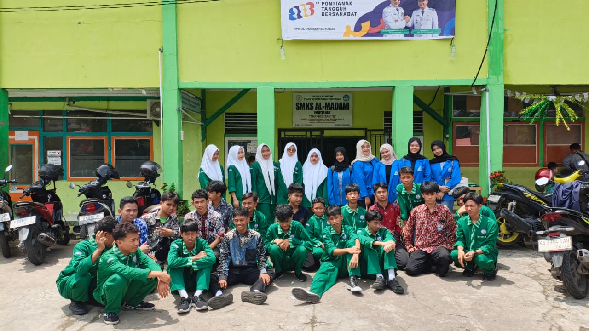
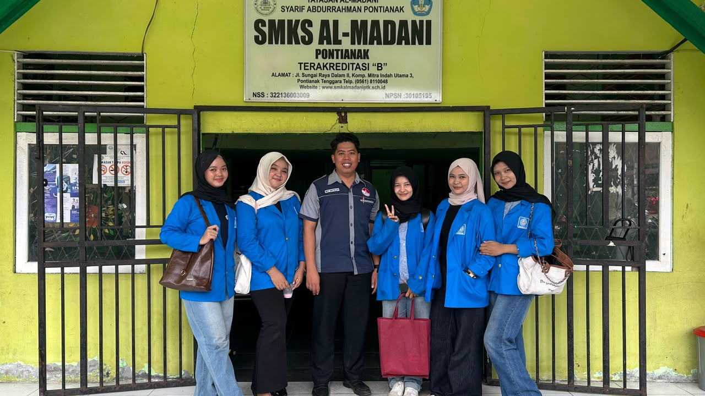
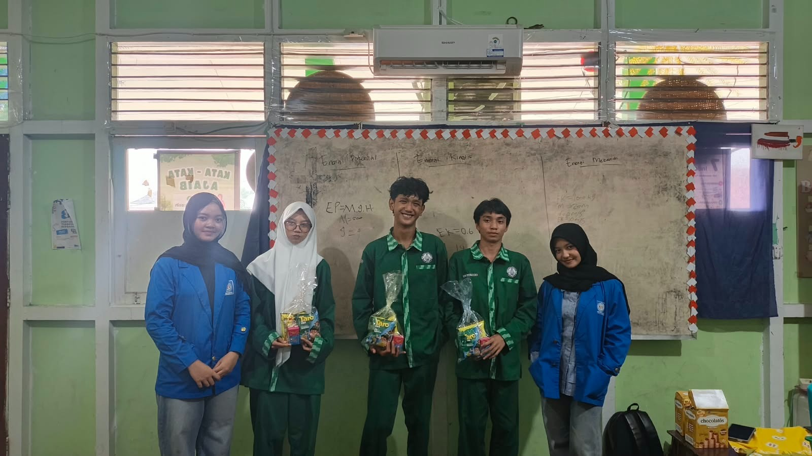
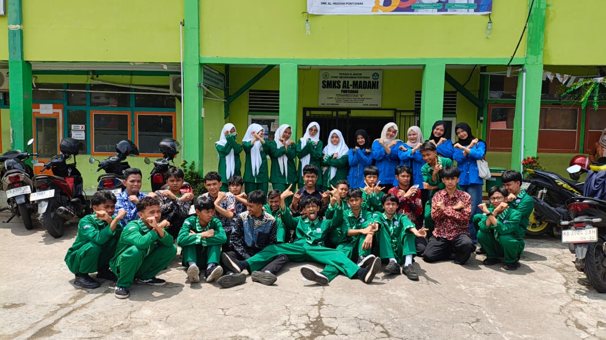

Sosialisasi Bijak Bermedia Sosial sebagai Upaya Meningkatkan Literasi Digital dan Mencegah Hoaks, Ujaran Kebencian, serta Cyberbullying pada Siswa SMK Al-Madani Pontianak

PONTIANAK, 28 Oktober 2026 – Dalam rangka meningkatkan kesadaran generasi muda terhadap etika dan keamanan di ruang siber, mahasiswa Universitas Bina Sarana Informatika (UBSI) Kampus Pontianak menyelenggarakan kegiatan Pengabdian kepada Masyarakat (PkM) bertajuk "Sosialisasi Bijak Bermedia Sosial sebagai Upaya Meningkatkan Literasi Digital dan Mencegah Hoaks, Ujaran Kebencian, serta Cyberbullying" di SMK Al-Madani Pontianak pada hari Rabu, 28 Oktober 2026.
Kegiatan ini dilatarbelakangi oleh tingginya intensitas penggunaan media sosial di kalangan pelajar tingkat Sekolah Menengah Kejuruan (SMK). Tanpa dibekali pemahaman literasi digital yang memadai, remaja rentan terpapar informasi palsu (hoaks), terpancing provokasi ujaran kebencian, maupun menjadi korban serta pelaku perundungan siber (cyberbullying) yang dapat berdampak buruk terhadap kesehatan mental dan masa depan mereka.
Tiga Pilar Utama Materi Sosialisasi:
- Identifikasi & Verifikasi Hoaks: Teknik memeriksa sumber berita, mengecek fakta sebelum membagikan ulang (saring sebelum sharing), serta mengenali ciri-ciri judul provokatif.
- Etika Komunikasi & Pencegahan Ujaran Kebencian: Membangun budaya diskusi yang santun di kolom komentar dan memahami konsekuensi hukum berdasarkan Undang-Undang Informasi dan Transaksi Elektronik (UU ITE).
- Anti-Cyberbullying & Keamanan Jejak Digital: Cara melindungi privasi akun, merespons tindakan perundungan daring secara tepat, serta menjaga rekam jejak digital yang positif untuk persiapan dunia kerja.
Selama sesi berlangsung, para siswa SMK Al-Madani Pontianak tampak antusias mengikuti pemaparan materi yang dikemas secara interaktif melalui studi kasus nyata di media sosial, sesi tanya jawab, serta kuis edukatif. Para peserta diajak menganalisis langsung contoh konten hoaks yang sering beredar di grup percakapan maupun platform video pendek.
“Pelajar SMK merupakan generasi yang sangat dekat dengan teknologi digital. Melalui sosialisasi ini, kami berharap siswa-siswi SMK Al-Madani Pontianak tidak hanya cakap secara teknis dalam menggunakan media sosial, tetapi juga memiliki tanggung jawab moral untuk menciptakan ruang digital yang aman, sehat, dan bebas dari perundungan.”
Pihak sekolah SMK Al-Madani Pontianak menyambut baik inisiatif edukasi ini karena dinilai sejalan dengan pembinaan karakter siswa di era digital. Kegiatan ditutup dengan sesi foto bersama dan komitmen bersama seluruh peserta untuk menjadi pelopor pengguna media sosial yang cerdas, kritis, dan beretika di lingkungan sekolah maupun masyarakat luas.



Kontak Media
Untuk informasi lebih lanjut, konfirmasi wawancara, atau permintaan dokumentasi kegiatan, silakan menghubungi:
Narahubung: Firsha Amellia Sari ( mc )
Narahubung: Keisya Febrianti ( moderator )
Narahubung: Indah Zuliani ( pemateri 1 )
Narahubung: Keysha Febrianti ( pemateri 2 )
Narahubung: Rizky Amalia & Diyunda Putri Ardila ( Humas & Dokumentasi )
Institusi: Mahasiswa Program Studi Sistem Informasi, UBSI Kampus Pontianak
Telepon / WhatsApp: +6285757250740